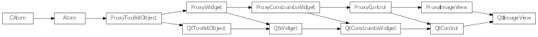

Bases: enaml.widgets.control.Control
A widget which can display an Image with optional scaling.
The image to display in the viewer.
Whether or not to scale the image with the size of the component.
Whether to allow upscaling of an image if scale_to_fit is True.
Whether or not to preserve the aspect ratio if scaling the image.
An image view hugs its width weakly by default.
An image view hugs its height weakly by default.
A reference to the ProxyImageView object.

Bases: enaml.qt.qt_control.QtControl, enaml.widgets.image_view.ProxyImageView
A Qt implementation of an Enaml ProxyImageView.
A reference to the widget created by the proxy.